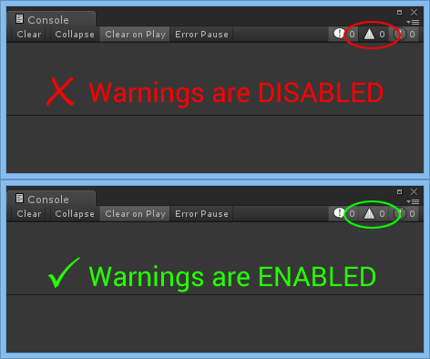

Troubleshooting
Topics:
- Something isn't working...
- My controller doesn't work
- Joystick control doesn't work
- Keyboard control doesn't work
- Mouse control doesn't work
- XBox 360 controller L/R triggers can't be pressed at the same time on Windows
- Null reference exception when recompiling scripts in the editor at runtime
- Unity 5 compile errors in PS4, XBox One, WiiU, or other special platforms
- Time comparisons to Time.time don't match
- Exceptions with Steamworks.Net plugin
- Joystick buttons activate keyboard keys on Android
- Steam Controller
- Steam Controller is not detected (Windows)
- Steam Streaming controller support on Linux/SteamOS
- Steam Controller doesn't work with other controllers at the same time in Windows
- RewiredStandaloneInputModue issues
Something isn't working...
The single most common solution to a wide variety of support questions:
- Do you have warnings enabled in the Unity console?
Ensure warnings are enabled in the Unity console so you can see important messages created by Rewired for a variety of common situations. You should also have normal log messages and errors enabled. This can save a lot of time and back and forth questions.

My controller doesn't work
If you're using a controller that is not listed here, your controller doesn't have a hardware definition and will not automatically be recognized and mapped. Instead, it will use the Unknown Controller map and need to be manually mapped by the user prior to use through a custom control remapping screen. Please read about the Unknown Controller map and how unrecognized controllers are handled to understand why.
My gamepad doesn't work. I created a map using the Dual Analog Gamepad Template but it doesn't work.
Just because a controller is a gamepad does not mean Rewired will recognize it as a gamepad. Just what a "gamepad" is varies from product to product. There is no universal definition of a gamepad. The Dual Analog Gamepad Template only applies to controllers that have had definitions created for them and have been specifically assigned and configured for that template. If you want to use a gamepad that is not listed here, you either have to make a controller definition for it and add it to the Dual Analog Gamepad Template or provide your users with a control remapping screen so they can map the controls themselves.
More reasons why your controller may appear not to work:
- You have multiple controllers connected, one Player, and have left the default Joystick Auto-Assignment Settings in the Rewired input manager: Based on the default settings, Rewired will assign only one controller per-Player. If multiple controllers are present, only one will be assigned to each Player. If you only have one Player, the second controller will be left unassigned. In order to allow auto-assignment of multiple Joysticks to the same Player, Max Joysticks Per Player must be raised to a value greater than 1. See this page for information on Controllers.
Joystick control doesn't work
- Did you create one or more Players in the Rewired input manager?
- Is Auto-assign Joysticks enabled in the Rewired Input Manager Settings page or have you manually assigned joysticks to the Player(s) during runtime through scripting? (See "My Controller Doesn't Work" also.)
- Did you create any Joystick Maps compatible with the controller(s) you're using?
- Did you assign those Joystick Maps to your Player(s) on start?
- Are those Joystick Maps enabled on start in the Player(s)?
- Is the joystick you're using a recognized controller? If not, please read about the Unknown Controller map and how unrecognized controllers are handled.
- Please go through the Quick Start guide and ensure you haven't missed any steps.
- Read the documentation to learn more about how Controllers and Controller Maps work.
Keyboard control doesn't work
- Did you create one or more Players in the Rewired input manager?
- Did you create any Keyboard Maps?
- Did you assign those Keyboard Maps to your Player(s) on start?
- Are those Keyboard Maps enabled on start in the Player(s)?
- Please go through the Quick Start guide and ensure you haven't missed any steps.
- Read the documentation to learn more about how Controllers and Controller Maps work.
Mouse control doesn't work
- Did you create one or more Players in the Rewired input manager?
- Did you create any Mouse Maps?
- Did you assign those Mouse Maps to your Player(s) on start?
- Are those Mouse Maps enabled on start in the Player(s)?
- Did you check "Assign Mouse on Start" in the Player(s) you want to have access to the mouse or assign the mouse manually to the Player(s) during runtime through scripting?
- Please go through the Quick Start guide and ensure you haven't missed any steps.
- Read the documentation to learn more about how Controllers and Controller Maps work.
XBox 360 controller L/R triggers can't be pressed at the same time on Windows
This is a design issue with the Microsoft XBox 360 controller driver. The XBox 360 controller driver only returns a single byte of data for both the left and right triggers making it impossible to distinguish the two when both are pressed simultaneously when using Raw Input or Direct Input. You can read about this issue and the reasoning behind the design here.
The solution is to enable XInput in the Rewired Editor - Settings. XInput is able to treat the triggers as separate values.
Null reference exception when recompiling scripts in the editor at runtime
NOTE: This information only applies to runtime recompiling in the editor while in Play mode. If you don't need this functionality, you do not need to do any of the following.
Null reference exceptions thrown during a recompile are a result of a script not checking if Rewired is ready before attempting to access properties or methods of the ReInput class.
If your workflow requires that you edit scripts during runtime, you should be aware that once recompile is triggered, the main Rewired managing class is destroyed and recreated. All Player, Controller, and other references are no longer valid. Due to the sheer complexity of Rewired (native input for example), runtime data is not serialized and therefore seamless resuming from a runtime recompile is not supported (see below for details). To prevent your scripts from throwing null reference exceptions when you recompile during runtime, you should be checking ReInput.isReady to determine if the system is initialized at the beginning of your input update.
Code patterns that survive runtime recompiles:
Pattern 1: Get Rewired Player every update
using UnityEngine;
using Rewired;
public class RecompileTest : MonoBehaviour {
void Update () {
if(!ReInput.isReady) return; // check if Rewired is ready (if false, editor is compiling)
// Do input processing
Player p = ReInput.players.GetPlayer(0); // get the Player object every update
Debug.Log(p.GetButton("Fire"));
}
}
- By checking ReInput.isReady at the beginning of the update and exiting if it's not ready, you avoid null references while Unity is recompiling.
- Never make any calls to any Rewired classes while the editor is recompiling (ReInput.isReady == false).
- By getting the Player every update and not storing it, you don't have to worry about it going out of scope after a recompile.
Pattern 2: Caching Rewired Player
This pattern allows you to cache your Player object on Awake and not have to get the Player each update. However, when recompiling, you must get a new reference to the Player object after compiling is finished because the original object is no longer valid.
public int playerId = 0;
private Rewired.Player player;
private bool isRecompiling;
void Awake() {
CacheRewiredPlayer();
}
void Update() {
GetInput();
}
void GetInput() {
#if UNITY_EDITOR
if(IsCompiling()) return; // exit during recompile
#endif
float value = player.GetAxis("MyAxis");
}
bool IsCompiling() {
if(!ReInput.isReady) {
isRecompiling = true;
return true;
} else if(isRecompiling) {
isRecompiling = false; // just finished recompiling
CacheRewiredPlayer(); // get the new Player object after recompile
}
return false;
}
void CacheRewiredPlayer() {
// Store the Player object
player = ReInput.players.GetPlayer(playerId);
}
The #if UNITY_EDITOR preprocessor directive was added because there is no need to check for recompiling in a build since this isn't possible.
Unity 5 compile errors on PS4, XBox One, WiiU, or other special platforms
Assets/Rewired/Internal/Scripts/InputManager.cs(5,15): error CS0234: The type or namespace name `Utils' does not exist in the namespace `Rewired'. Are you missing an assembly reference?Assets/Rewired/Internal/Scripts/InputManager.cs(6,15): error CS0234: The type or namespace name `Platforms' does not exist in the namespace `Rewired'. Are you missing an assembly reference?
Both Utils and Platforms are namespaces in Rewired_Core.dll.
Unity added the ability to designate what platforms DLLs compile to in Unity 5 by setting check boxes on the DLL in the inspector for each platform. Rewired_Core.dll comes with all options checked except Windows App Store. Special versions of Unity add checkboxes for that specific platform (PS4 for example). That special platform check box is not and cannot be automatically checked by Rewired because it is built on a standard Unity 5 build that does not contain these special platforms.
To fix this, simply click on Rewired/Internal/Libraries/Runtime/Rewired_Core.dll and check the appropriate platform checkbox in the inspector.

Time comparisons to Time.time don't match
When doing time comparisons to the current time from methods such as Controller.GetLastTimeActive(), you must compare current time based on ReInput.time.unscaledTime, not Time.time or Time.unscaledTime as Rewired always uses its own unscaled time calculation for all input for better accuracy in the various update loops. Do not compare against Time.unscaledTime as this is not always in perfect sync with Rewired's unscaled time.
Exceptions with Steamworks.Net plugin
There have been two reports of exceptions being thrown during Rewired's initialization on Windows with the Steamworks.Net Unity plugin. Thus far, the only information I have is that Steamworks may be setting up a hook that intercepts all external calls and routes them through its callback dispatcher system. When Rewired tries to initialize Raw Input, Steamworks intercepts the call and throws an exception. This is an issue with Steamworks and not Rewired. Based on reports, it appears to only happen when Steamworks is initialized and certain methods are called before instantiating and initializing Rewired. (I have been unable to reproduce this issue myself thus far.)
Until I receive a reliable repro case where I can determine exactly what Steamworks is doing and find a workaround if one exists, the only solution is to always initialize Rewired first before Steamworks. This means you must have your Rewired Input Manager in your scene before your Steamworks manager is spawned and initialized and never destroy that Rewired Input Manager for the duration of runtime. (Don't Destroy on Load is checked by default on the Rewired Input Manager.)
There are many games on Steam that use Rewired with no issues whatsoever.
Joystick buttons activate keyboard keys on Android
Rewired uses Unity input as the input source in Android so it is subject to its limitations. Most Android joysticks return keyboard keycode values for certain buttons on the controller such as Left Shoulder (Left Shift), Right Shoulder (Right Shift), Back (ESC), Menu (Menu), etc. These keyboard values can be in additon to or instead of a joystick button value. This can be problematic if you've developed your game for both desktop PCs and Android and have keyboard maps already set up for the desktop and you want to use the same input scheme for an Android build. When you press one of these buttons, if it also has an Action assigned through a keyboard map, you may get 2 values returned -- one for the keyboard map and one for the joystick map.
An easy way to prevent this is to set ReInput.controllers.keyboardEnabled = false to disable all keyboard input on Android. Special provision has been made for certain Android keycodes used by most joysticks such as Back and Menu so that these will still work when activated by a joystick. In addition to solving this issue, disabling keyboard input improves performance slightly.
void Awake() {
#if UNITY_ANDROID
Rewired.ReInput.controllers.keyboardEnabled = false; // Disable keyboard input on Android platform
#endif
}
Steam Controller
All Platforms
Native Steam Controller support is not available at this time. Direct support of the controller's special features is not currently available. The Steam Controller can only be supported through Steam's automatic emulation of a standard controller (type varies by platform.)
Windows
The Steam Controller automatically emulates an XInput gampad (XBox 360) on Windows and is supported as an XInput gamepad only at the present time.
Linux
The Steam Controller can only be detected through the use of the SDL2 input library. If your game needs Steam Controller support, you must change the Linux Standalone Primary Input Source to SDL2.
IMPORTANT NOTE
The Steam Controller is not a standard HID device and cannot be seen by the OS without Steam being initialized for your process through the Steam API with Steam running in the background. It is not possible to use the Steam Controller without Steam. Rewired does not initialize Steam for you -- you will have to do so using the Steam API or a C# Steam library such as Steamworks.net.
Steam Controller is not detected (Windows)
The Steam Controller automatically emulates an XInput gampad (XBox 360) on Windows and is supported as an XInput gamepad. You must have Use XInput enabled in the Rewired Input Manager - Settings page or the Steam Controller will not be detected. (XInput can only be used in conjunction with Raw Input or Direct Input, not Unity Input. Further, Disable Native Input must not be checked.) In addition, Steam must be initialized through the Steam API before the Steam Controller can be detected as an XInput device.
Steam Streaming controller support on Linux/SteamOS
Due to the way Steam Linux works, Rewired's custom native input implementation will probably not work with Steam Streaming on Linux. However, Rewired includes the option to use SDL2 as the input source which in theory should work with Steam Streaming on Linux/SteamOS, since Steam Linux controller remapping is based on SDL2.
Steam Streaming support is currently untested on Linux/SteamOS. To choose SDL2 as your input source on Linux, choose it in the Settings page of the Rewired Input Manager. You will also need to install the SDL2 libraries. See Deployment for more information.
Steam Controller doesn't work with other controllers at the same time in Windows
On Windows, Steam takes control over all input systems at the OS level. When using a Steam Controller in conjunction with other Raw Input controllers, Steam will prevent all Raw Input controllers from being seen by the system. This is an intentional behavior by Steam because they want to be able to determine what controllers are seen on both the host and client systems when using Steam Streaming, hiding all controllers on the host system and showing the application only those controllers detected on the client device and emulated on the host by Steam. What Steam did not account for is that this breaks compatibility with all non-XInput controllers when using a Steam Controller at the same time. Rewired implements a unique workaround that allows non-XInput controllers to work along side a Steam Controller. Enable this option in the Rewired Input Manager -> Settings page. See the notes on that page for caveats of this workaround.
RewiredStandaloneInputModue issues
Please see Rewired Standalone Input Module - Troubleshooting.